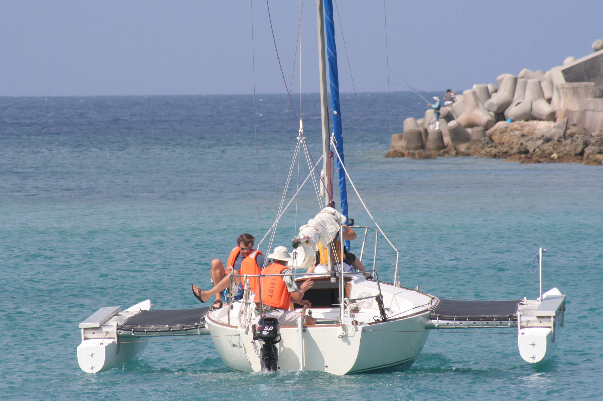

J/24

Descrizione
Il J/24 è il cabinato a chiglia fissa (bulbo) più famoso e diffuso al mondo. È una barca solida, sicura e incredibilmente divertente, che unisce la sensibilità di una deriva alla stabilità di una barca a chiglia. È la regina delle regate "monotipo", dove vince l'equipaggio migliore e non la barca più costosa.
A chi è adatta?
Perfetta per chi vuole passare dalle derive ai cabinati, imparare a navigare in equipaggio (da 3 a 5 persone) e partecipare a regate combattute e divertenti. È anche ideale per le uscite giornaliere in famiglia o con amici in totale sicurezza.
| Scheda Tecnica | |
|---|---|
| Lunghezza fuori tutto | 7,32 m |
| Larghezza | 2,71 m |
| Pescaggio | 1,22 m |
| Superficie Velica | 24,25 m² |
| Dislocamento (Peso) | 1406 kg |
| Equipaggio | 3-5 persone |